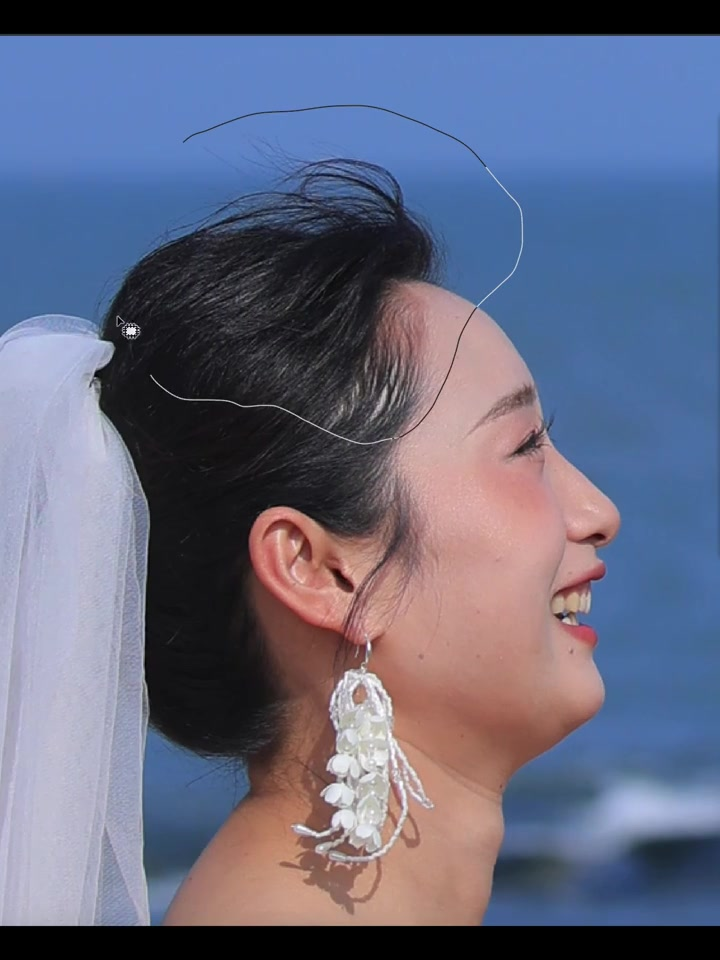
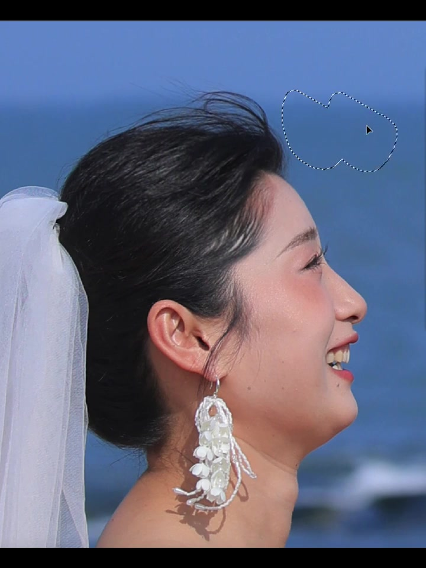
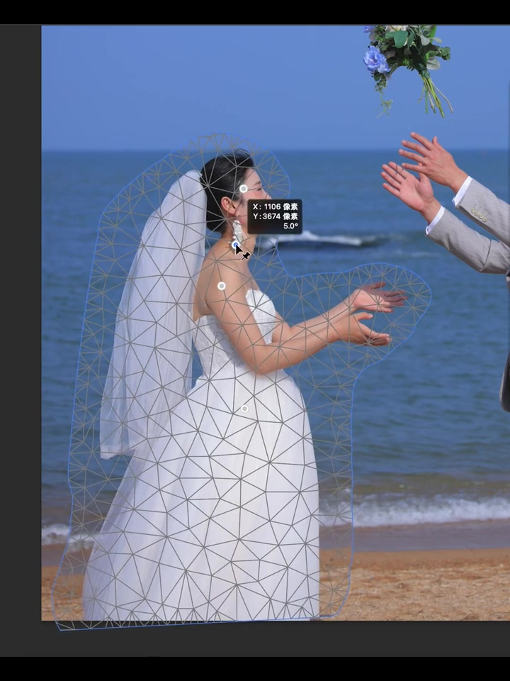
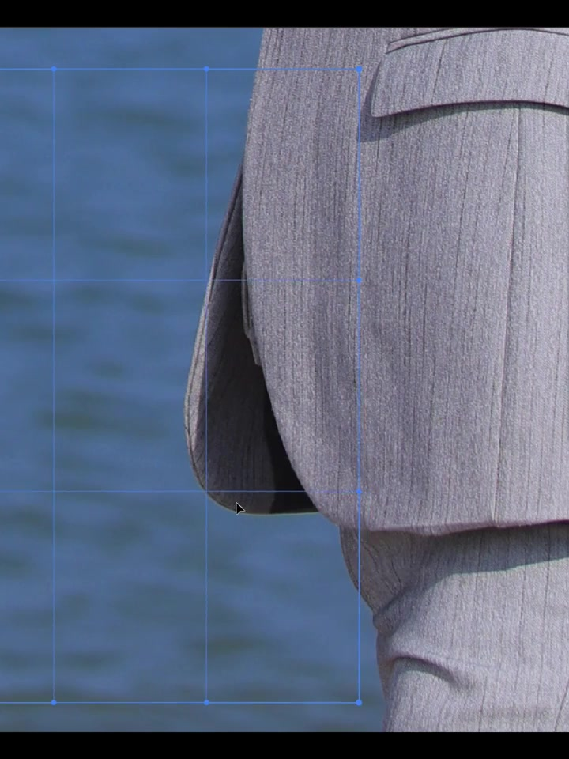
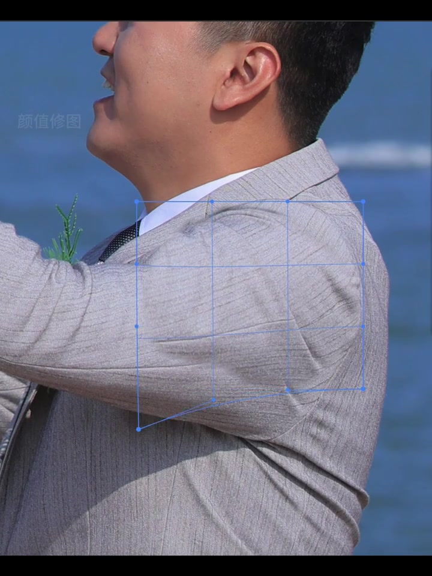
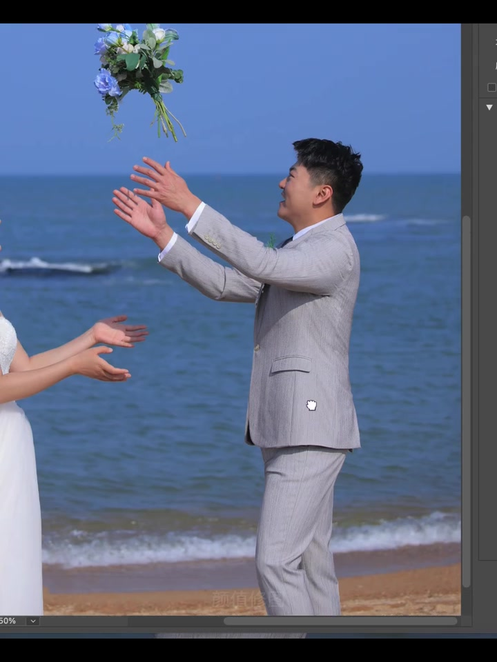
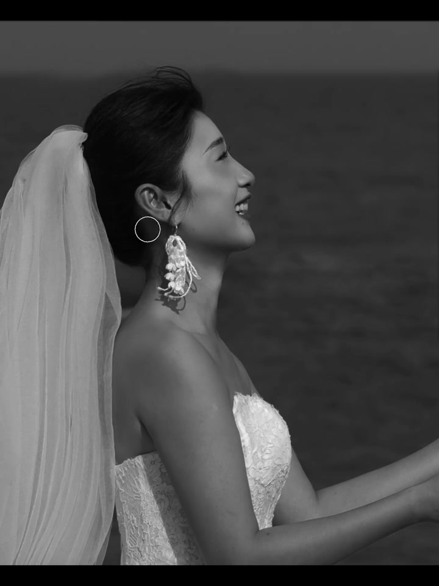
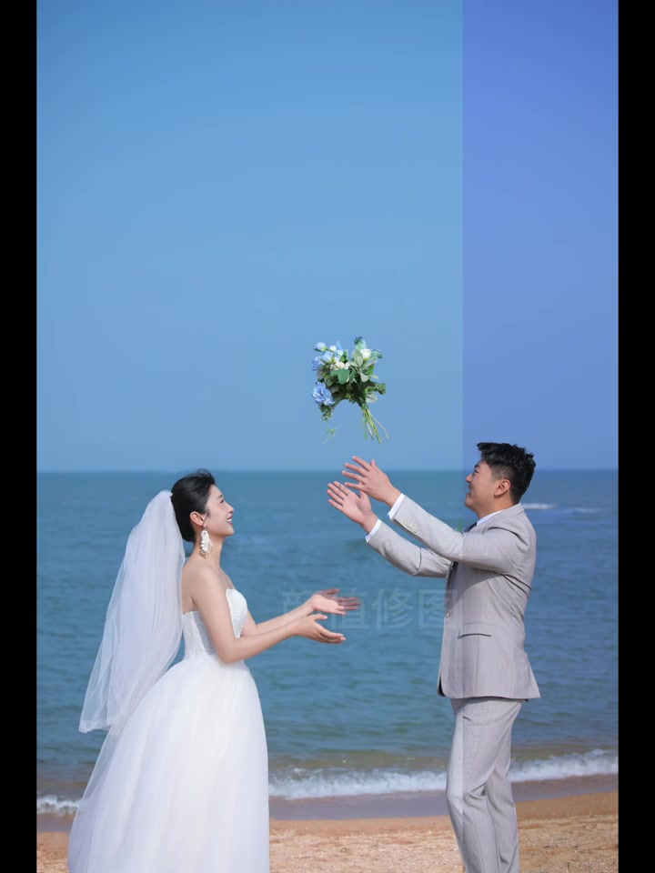

01
中文
从发顶到额头勾勒线条。
EN
An outline runs from the crown to the forehead.
表达提示outline（轮廓线）

Scene English · 修图 · 人像精修
Wedding Retouch in Progress
🎧 语音讲解
Outline From Crown to Forehead
情境开场侧脸：发顶到额头的勾勒线，圆形播放式光标停在发际附近。修图师从脸部轮廓入手，先用钢笔勾勒关键线条。
从发顶到额头勾勒线条。
An outline runs from the crown to the forehead.
表达提示outline（轮廓线）
光标停在发际附近。
The cursor pauses at the hairline.
表达提示hairline（发际线）
outline（轮廓线
hairline（发际线

Sky Selection
情境天空选区：不规则「蚂蚁线」落在蓝天区域，准备做局部处理或填充。用选区工具圈出天空，准备替换或调整。
蚂蚁线圈出蓝天区域。
Marching ants trace the blue sky.
表达提示marching ants（蚂蚁线）
准备做局部处理或填充。
Ready for local edits or a fill.
表达提示local edit（局部处理）
marching ants（蚂蚁线
local edit（局部处理

Liquify Mesh
情境液化/变形网格：新娘全身三角网与钉点，耳旁显示像素坐标与6.0°。液化工具通过网格精确控制身体曲线，避免全局变形。
全身三角网格与钉点。
A full-body triangle mesh with pins.
表达提示mesh（网格）
液化精确调整身体曲线。
Liquify shapes the body line precisely.
表达提示liquify（液化）
mesh（网格
liquify（液化

Suit Selection
情境西服选区：蚂蚁线贴着夹克下摆与背景交界，准备局部处理。沿服装边缘建立选区，为局部调整做准备。
蚂蚁线贴着夹克下摆。
Marching ants ride the jacket hem.
表达提示hem（下摆）
准备局部处理。
Ready for local adjustment.
表达提示local adjustment（局部处理）
hem（下摆
local adjustment（局部处理

Shoulder Deform Grid
情境肩部变形网格：蓝色3×3锚点覆盖西装肩臂，水印「颜值修图」可见。针对肩臂区域做局部网格变形，调整体态。
蓝色3×3锚点覆盖肩臂。
Blue 3×3 anchors cover the shoulder and arm.
表达提示anchor（锚点）
局部变形调整体态。
Local warping fixes the posture.
表达提示warp（变形）
anchor（锚点
warp（变形

Trouser-Line Retouch
情境裤线刷修：100%缩放下圆形笔刷停在西裤膝后褶皱处。用笔刷处理裤子的褶皱细节，让面料干净挺括。
笔刷停在西裤膝后褶皱处。
The brush pauses at the knee creases.
表达提示crease（褶皱）
100%缩放处理细节。
Retouching at 100% zoom.
表达提示zoom（缩放）
crease（褶皱
zoom（缩放

Black-and-White Check
情境黑白检视：去色后回看新娘侧脸与头纱层次，圆形光标停在耳饰附近。去掉颜色，专门检查光影过渡是否均匀。
去色后回看侧脸与头纱。
Desaturated, reviewing profile and veil layers.
表达提示desaturate（去色）
黑白模式检查光影层次。
Black and white exposes the tonal layers.
表达提示tonal（影调的）
desaturate（去色
tonal（影调的

Final vs Graded
情境成片与调色对照：左右饱和度/色温差异明显，画面带修图服务水印。左边原片、右边成片，色温和饱和度差异明显。
左右饱和度与色温差异明显。
Saturation and white balance clearly differ side by side.
表达提示white balance（色温）
成片带修图服务水印。
The final frame carries the service watermark.
表达提示watermark（水印）
white balance（色温
watermark（水印
说轮廓勾勒
说蚂蚁线选区
说液化网格
说黑白检视
说前后对照
先轮廓后磨皮。
局部液化更自然。
黑白检视查光影。
对照才见效果。
细节要放大看。